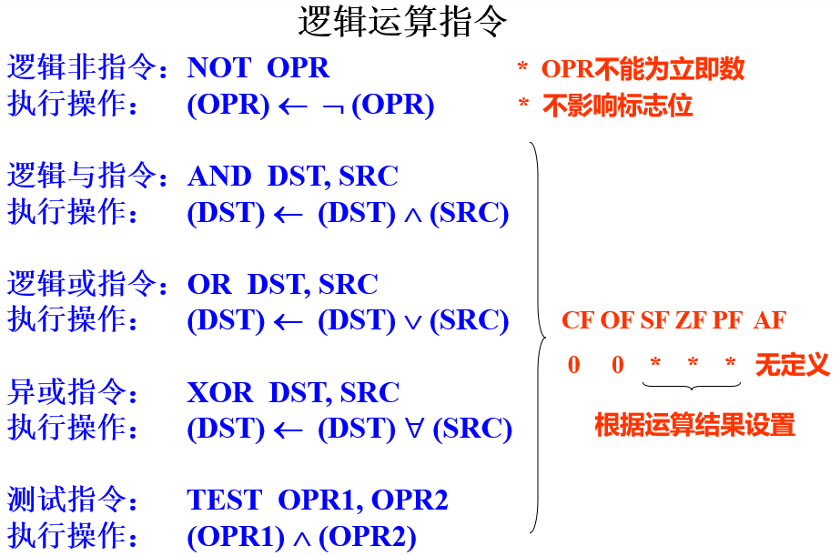

汇编复习笔记
以下描述中的内容都要掌握，但并不包含考试全部。
汇编是一门编程语言，结合代码掌握！
题目形式
第 1 题，改错
- 大多是第 3 章中指令使用，可能比较隐晦，比如
- 同时对两个内存操作
mov [di], [si] - 两个操作数类型不相同
sub ax, blmov cl, value[bx] - 用正确的方式实现
ADD [DI], [SI] - 用正确的方式实现
MOV AX, CL - push/pop 的不是16 位寄存器
- 字节或字类型作为指令操作数
- 段跨越前缀，源段 DS，目的段 ES（显式段赋值 或 默认段改变）
- CS 不能用 MOV 指令改变
MOV CS, AX - SRC 和 DST 的字长不一致
MOV AH, 1234H - 不允许使用 AX、CX、DX 存放 EA，
MOV AX, [CX] - 必须是一个基址寄存器和一个变址寄存器的组合
MOV AX, [BX][BP]MOV AX, [SI][DI] - 对无操作数指令，不添加操作数。
STC AL - 对单操作数指令，操作数不能是立即数。
IMUL 6 - 内存操作数的属性应明确（立即数 MOV 到内存对属性敏感）：
MOV [BX], 0MOV byte ptr [bx], 0MOV word ptr [bx], 0MOV [bx], alMOV [bx], ax
类似的inc(或dec) word ptr rank[bx] - A、B、C、D、E、F开头的十六进制数前面加0，与H结尾的标识符区别。
MOV al, ahMOV al, 0ah - 段寄存器无法直接赋值立即数
MOV DS, 1234h - 段寄存器无法直接赋值段寄存器
MOV DS, ES - 8086 中，移位指令的 CNT 只能是 1 或 CL
SHL BL, 2 - SEG、OFFSET 只能对符号地址操作
MOV AX, SEG [BX]MOV AX, OFFSET [SI] MOV AX, [BX]意味着PA = 16d x (DS) + (BX)MOV AX, ES:[BX]意味着PA = 16d x (ES) + (BX)MOV AX, [BP]意味着PA = 16d x (SS) + (BP)
- 同时对两个内存操作
第 2 题，以 debug 形式
- 改 ip 使得从第 3、4 条指令开始执行，内存偏移量地址，(ds)=?
- 执行某行后 (AX) 或 FLAG 等寄存器的结果
NOT ax不影响标志位，其他逻辑操作根据结果设置标志位，不过 CF=OF=0
- u、t、g、r 等大概 4、5 种常用命令
第 3 题，读程序
- 第 1 小题，程序不难但有点小技巧，比如累加程序（不是简单的
1+2+3+...）。
让你读懂程序后写结果。 - 第 2 小题，输入一个数，显示一个数（比如进制转换、ASCII转换，复习PPT 115页）
让你读懂程序后写结果。
第 4 题，子程序填空
- 课本的例子程序、做实验自己写的程序，挖掉了某些语句，告诉子程序功能，填补语句
- 应该是实验指导书前 2 章中自己做的程序。
- 条件转移指令（有符号、无符号）必考
第 5 题，编程题
- 比如排序题、人名排序、数据排序、电话号码簿排序
- 中断 21h 的屏幕显示（字符、字符串）、读键盘（字符、字符串）
- 如果都能写出来，就着重看汇编定义伪指令的正确与否
其他
累加、排序、插数、抽数
让你画出内存栈的变化结果
注意事项
复习课 PPT 可能有针对 5、6、7 章类似的题
第 3 章没什么示例、第 4 章作为大题考
可能会掺杂 DS、ES 不同的问题
第一章
进制转换
- 比如 10-16 进制的转换，渗透考察
- 注意读题给出的数是几进制
数与字符的输入输出 —— ASCII 表
'0' = 48 = 30h'A' = 65 = 41h'a' = 97 = 61h回车符 = 13 = 0dh换行符 = 10 = 0ah，回车-换行符在 DOS 下要搭配使用
空格符 = 20h'$' = 24h
补码运算
老师：“出了相应的题，注意补码运算的性质、相对应的语句”
猜测
考察 $\begin{cases}[X+Y]_补 = [X]_补+[Y]_补 \ [X-Y]_补 = [X]_补+[-Y]_补\end{cases}$
会以
第 2 题 debug形式考，如1
2
3
4
5mov al, 20h
mov bl, 19h
add al, bl
打入 -t 指令，问寄存器结果、FLAG
第二章
实模式寻址
8086、8088 工作在 20 位地址下，单任务工作方式，独占系统所有资源。实模式下允许的最大寻址空间为 $2^{20} = 1\text{MB} $
数据总线宽度是 16 位，地址总线宽度是 20 位，但寄存器是 16 位，所以划分每个段最大限长为 $2^{16} = 64\text{KB} $，理应需要增补高 4 位以形成 20 位地址，可以引入一个寄存器配合使用（段寄存器由来）
但是，现在反过来，采用
小段的方式划分段，即每 4 位（16 个字节）一个段，共 64K 个段。
16 位段寄存器作高 16 位，段地址
16 位寄存器作低 16 位，段内相对于段起始地址的偏移值，也叫有效地址 EA，这 16 位的高 12 位如果不为 0，就是跨段
二者相加，得到物理地址段是可以重叠的
物理地址 = 段基址 x 16 + 段内偏址 = (段基址16位形式 << 1) + 段内偏址段寄存器与偏址寄存器的默认使用
通用寄存器：数据/指针(变址) 寄存器的使用方式、默认搭配（隐含性质）
- AX，accumulator，累加器
BX，base，基址寄存器
CX，count，计数器，移位操作的位数也可放到这里
DX，data，数据寄存器 - SP，stack pointer，堆栈指示器
BP，base pointer，基址指示器
SI，source index，源变址器
DI，destination index，目的变址器 - 只有 SP、BP、SI、DI、BX 可用于存放地址
- 基址寄存器是：BX、BP
- 变址寄存器是：SI、DI
- 数据传送时，默认搭配 -> 第 3 章
- 算术指令时，默认搭配 -> 第 3 章
- AX，accumulator，累加器
FLAG 标志寄存器（或叫 PSW 程序状态字寄存器）：
条件码标志 —— 溢出 OF、符号 SF、零标志 ZF、进位 CF、辅助进位标志 AF、奇偶标志 PF
控制码标志 —— 方向标志 DF（下图中DF是错的，应该为DF=0是增址方向、DF=1是减值方向）
系统标志位 —— 中断标志 IF、陷阱标志 TF
各个标志位的设置
debug中会用到的标志位缩写
| 标志名字 | 标志为 1 | 标志为 0 |
|---|---|---|
| 溢出标志OF(Over flow flag) | OV overflow | NV no overflow |
| 方向标志DF(Direction flag) | DN down | UP up |
| 中断标志IF(Interrupt flag) | EI enable interrupt | DI disable interrupt |
| 符号标志SF(Sign flag) | NG negative | PL plus |
| 零标志ZF(Zero flag) | ZR zero | NZ no zero |
| 辅助标志AF(Auxiliary carry flag) | AC auxiliary carry | NA no auxiliary |
| 奇偶标志PF(Parity flag) | PE parity even | PO parity odd |
| 进位标志CF(Carry flag) | CY carry | NC no carry |
- 段寄存器：
CS、DS、ES、SS- 代码段在最上面（一般不变动）
- 堆栈段在最下面（向上生长）
压栈，图形问法
小端（低地址存低位字节），如下
12345678h
2.6 题
- 解：，OF=0，SF=0，ZF=0，CF=0
第三章
40 分。基本语句记住，包括其注意事项
变址*比例因子，可能不考
堆栈指针，向上生长，压栈相当于指针减（SP的赋值）
段跨越前缀，有三种情况不允许使用段跨越前缀：
- 串处理指令的目的串必须用 ES
- PUSH 指令的目的和 POP 指令的源必须用 SS 段
- 指令必须存放在 CS 段中
ADD OPD, OPS影响标志位- CF是否和的最高有效位有向最高位的进位（按原码加法时是否有溢出）
OF是否 源&目的操作数符号 与 结果符号相反
ZF是否为零
SF是否为负） - CF 位表示 无符号数 相加的溢出。
OF 位表示 带符号数 相加的溢出。
- CF是否和的最高有效位有向最高位的进位（按原码加法时是否有溢出）
SUB OPD, OPS影响标志位- CF是否 被减数的最高有效位 有 向高位的借位 （或者说 减法转换为加法运算时 无进位 ）
OF是否 两个操作数符号相反，而结果的符号与减数相同
ZF是否为零
SF是否为负） - CF 位表示 无符号数 减法的溢出。
OF 位表示 带符号数 减法的溢出。
- CF是否 被减数的最高有效位 有 向高位的借位 （或者说 减法转换为加法运算时 无进位 ）
INC OPD、DEC OPD不影响 CF，其他均影响
乘法
- 无符号乘法
MUL SRC - 有符号乘法
IMUL SRC - 字节乘法：AX ← (AL) * (OPS)
双字乘法：EDX, EAX ← (EAX) * (OPS)字乘法：DX, AX ← (AX) * (OPS)
- 无符号乘法
除法
- 无符号除法
DIV SRC - 有符号除法
IDIV SRC - 字节除法：AH(余), AL(商) ← (AX) / (OPS)
双字除法：EDX(余), EAX(商) ← (EDX, EAX) / (OPS)字除法：DX(余), AX(商) ← (DX, AX) / (OPS)
- 无符号除法
BCD 码
- 压缩的BCD码：用4位二进制数表示1位十进制数，例如：$(59){10} = (0101\ 1001){\text{BCD}}$
- 非压缩的BCD码：用8位二进制数表示1位十进制数，例如：$(59){10} = (00000101\ 00001001){\text{BCD}}$
- 数字的 ASCII 码是一种非压缩 BCD 码
- BCD 码的加减法调整：
即低四位范围属于 0-9，但运算过程中大于 9 且进位到高四位后其调整问题（加法举例）
压缩的 BCD 码调整指令
- 加法调整
DAA，decimal adjust on add 原理- 若 AF=1，或者 $\text{(AL)}_{0-3} > 9$，那么有进位，给低四位加上 06h = 0110b，即$\text{(AL)}\leftarrow \text{(AL)}+06h$，并且 AF=1
- 若 CF=1，或者 $\text{(AL)}_{4-7} > 9$，那么高四位有进位，向 AH 进位了，要给高四位加上 06h，即$\text{(AL)}\leftarrow \text{(AL)}+60h$，并且 CF=1
- 减法调整
DAS，decimal adjust on substract- 原理类似，只不过把上述对 AL 的加操作改为减
- 加法调整
1 | DATA SEGMENT |
非压缩的 BCD 码调整指令
- 大概率不会考到，所以不涉及了，并且原理可以自己推，主要把握一个要点：
8 位二进制表示的非压缩 BCD 码中 高 4 位要常等于 0，低 4 位要属于 0-9 范围 - 加法调整
AAA，ascii adjust on add 原理 - 减法调整
AAS，ascii adjust on substract
- 大概率不会考到，所以不涉及了，并且原理可以自己推，主要把握一个要点：
逻辑运算 
移位指令
- 8086 中，移位指令的 CNT 只能是 1 或 CL
移位指令：SF、ZF、PF 根据移位结果设置
- 循环移位指令： 不影响 SF、ZF、PF、AF
| 指令 | 全称 |
|---|---|
| SHL | shift left |
| SAL | arithmatic shift left |
| ROL | rotate left |
| RCL | rotate left with carry |
REP MOVS- 首地址(末地址) → SI，注意是数据段
- 目的串首地址（末地址）→ DI，注意是附加段
- 串长度 → CX
- 建立方向标志（
CLD使DF=0，STD使DF=1）
简单条件转移：
| 指令 | 条件 |
|---|---|
| JZ / JE | ZF=1 |
| JNZ / JNE | ZF=0 |
| JS | SF=1 |
| JNS | SF=0 |
| JO | OF=1 |
| JNO | OF=0 |
| JC | CF=1 |
| JNC | CF=0 |
| JP / JPE | PF=1 |
| JNP / JPO | PF=0 |
- 无符号数条件转移指令：
| 指令 | 全称 | 条件 |
|---|---|---|
| JA / JNBE | jump when above | CF=0 且 ZF=0 |
| JAE / JNB | jump when above or equal | CF=0 或 ZF=1 |
| JB / JNAE | jump when below | CF=1 且 ZF=0 |
| JBE / JNA | jump when below or equal | CF=1 或 ZF=1 |
1 | CMP AX, BX |
- 有符号数条件转移指令：
| 指令 | 条件 |
|---|---|
| JG / JNLE | SF=OF 且 ZF=0 |
| JGE / JNL | SF=OF 或 ZF=1 |
| JL / JNGE | SF != OF 且 ZF=0 |
| JLE / JNG | SF != OF 或 ZF=1 |
- 中断指令
INT Type和 中断返回IRET实际执行的指令
1 | INT: |
- 处理机控制指令 - 标志处理指令
| 指令 | 全称 | 作用 |
|---|---|---|
| CLC | clear carry | CF <- 0 |
| CMC | carry make change | CF <- $ \overline{\text{CF }}$ |
| STC | set carry | CF <- 1 |
| CLD | clear direction | DF <- 0 |
| STD | set direction | DF <- 1 |
| CLI | clear interrupt | IF <- 0 |
| STI | set interrupt | IF <- 1 |
- 其他指令
CBW，change byte to word，将 ax <- al
第四章
- 伪指令定义
- segment 定义
- assume
- ASSUME 语句只起指示作用，并无实际的操作，还要实际赋值段寄存器
1 | datasg1 segment |
- 退出 DOS
1 | mov ah, 4ch |
- 超过 2 个字符的定义
$的使用
PTR属性操作符
1 | num db ?,? |
label伪操作- 同一个地址可以赋予不同类型的 变量名
1 | byte_array label byte # 指向下一行变量定义的地址 |
- 表达式赋值伪操作
EQU
1 | CONSTANT EQU 256 |
第五章
课本例子 5.1 5.2 5.3 5.4 5.5 5.7 5.9，可能考读程序
- 例：将 BX 中内容以十六进制显示出来
第六章
课本例子 6.9 6.10 6.11，通过堆栈传参
- 例6.3 十进制到十六进制的转换（能默写）
第七、八章
- 宏汇编，能看懂说出功能、会使用
1 | 宏定义： |
中断 21h 中输入输出，要求
键盘输入 1 个字符 —— 1 号：
MOV AH, 1INT 21H- 功能：
等待从键盘输入一个字符;
将输入字符的ASCII 码 → AL;
将该字符送显示器显示。
显示输出 1 个字符 —— 2 号：
MOV AH, 2MOV DL, 带显示字符的 ASCIIINT 21H- 功能：将 DL 中的字符送显示器显示
显示输出字符串 —— 9 号：
LEA DX, 字符串首偏移地址MOV AH, 9INT 21H- 功能：从 DS：DX 所指向的单元开始，依次显示字符，直到遇到 ‘$‘ 为止。
- 若字符串本身包含 ‘$‘ 就用 2 号调用循环输出吧
键盘输入字符串 —— 10 号：
LEA DX, 缓冲区首偏移地址MOV AH, 10或MOV AH, 0ahINT 21H- 功能：从 DS：DX 所指的输入缓冲区输入字符串并送显示器显示
in/out
- 有一道 2、3 分的小题
- 程序查询方式：CPU 利用 IN/OUT 指令直接在端口级上处理输入输出
- CPU 通过不断查询外设状态，实现与外设的速度匹配。但工作效率低
图形显示、键盘、声音，中断不考
Debug 的使用
debug test.exe：
DS=ES指向当前最低的、可用的段地址（PSP的首字节）；CS:IP和SS:BP根据被调试程序确定，分别指向代码段和堆栈段；BX : CX为文件长度（双精度形成 32 位），其它通用寄存器和状态标志清 0
-r：register
- 显示所有寄存器和标志位状态
显示当前CS：IP指向的指令 - 另一种用法
-R寄存器名，显示并修改指定的寄存器，下一行输入修改值（16进制）
- 自然可以修改
IP：
-u [地址]：
反汇编命令，从指定地址开始反汇编 32 个字节的机器指令；
省略地址时，则接着上一个 U 命令的最后一个单元开始；
若第一次使用 U 命令省略地址，则从当前CS:IP开始另一种用法
-U100，从指定范围的单元100开始进行反汇编 32 个字节另一种用法
-U100L5，从指定范围的单元100开始进行反汇编 5h 个字节（注意是 16 进制）
g[=地址] [断点1 断点2 断点3 ... 断点10] ：
- 从指定地址开始执行程序，直到程序结束 或 遇到
INT 3或 遇到定义的断点地址
缺省时则从CS:IP指向的指令开始
-d [地址] [范围]：display
- 从指定
地址开始显示范围大小字节的内存区域
地址缺省时，默认为ds:当前偏址
范围缺省时，默认为 8行 x 16字节
全缺省时，且第一次用，默认为cs:0，后续则为在上次使用的基础上显示
- 注意 DS 赋值后再显示
-t[=地址] [数值] ：trace
- 从
地址开始执行数值条指令
地址缺省时，为ip
数值缺省时，为1 - 执行完后，显示寄存器内容、下一个待执行指令
-e 段:地址 [数据表]：edit
- 从指定地址开始连续修改数据表内容
如果数据表缺省，则进入交互模式，空格表示下一个单元，减号表示上一个单元，修改则主动输入，回车键表示结束并保存结果
-a[地址]：append
- 从指定地址开始输入符号指令（写汇编，会覆盖原内容）
如果地址缺省，则从当前cs:ip开始
Gift 2020.1.4
第 1 题 8x3=24分
（1）cmp al, bx
（2）add al, bx
（3）cmp [bx], 5
（4）mov [bx],[di]
（5）mov [cx],ax
（6）push al
（7）mov al, 300h
（8）mov bx, al
第 2 题 7空x2=14分
（1）下列程序段信息是使用DEBUG命令显示的结果，命令执行完后，AX，BX及IP的内容及标志位OF，CF的状态是什么？
1 | C>DEBUG |
AX=( ) BX=( ) CF=( ) OF=( ) IP=( )
（2）
1 | -r ES 改为 0 |
第 3 题
（1）一个计算斐波那契数列存到BUF数组中的程序
（2）一个读字符串然后倒序输出的程序
第 4 题
（1）补充BX输出十六进制程序
（2）人名排序即课本例子 6.11 中的 sort 部分
第 5 题 14分
（1）100h个16位补码数放在TABLE，求出现最多的数NUMB，和次数COUNT
（2）将BUF缓冲区中4位16进制数转换为ASCII存到MEM的4个字节中（例如 29a4，存到MEM是34h,41h,39h,32h 很奇怪），并要求输出